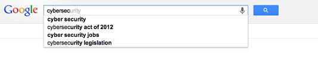

This module takes our background knowledge of the Internet and explains specific vulnerabilities found in some of our most essential Internet applications and functions. We will look at vulnerabilities in web applications, databases, DNS, and BGP and potential defenses for each of these.
In this module, we will be discussing various types of application attacks. Most of the attacks we will discuss focus on the web and HTTP, but we will also look at attacks on DNS and BGP.
This topic is out of scope for our textbook, so this week we will mainly read online articles and references and view several videos.
The Open Web Application Security Project (OWASP) has developed an extensive wiki that includes references for many web attacks and vulnerabilities. I encourage you to take a look at the following set of resources (some of these articles will be assigned later):
At the end of this module, students will be able to:
We are under attack! Attackers are trying to get us to give them our private information. There are many ways this can be done without us even knowing, from attacking the DNS system in order to send us to malicious web sites to using web security vulnerabilities to access our sensitive information stored on others’ servers.
We’re going to talk about some HTTP attacks, particularly those that involve JavaScript and AJAX.
First, let's cover a couple important things about JavaScript and AJAX. JavaScript is code that a web browser executes. Typically a user visits a webpage that has JavaScript code embedded or as an embedded object. The browser downloads the code and executes it to perform some function on the webpage. JavaScript is powerful and is widely used, but we have to be careful to avoid some of its vulnerabilities.
AJAX is a set of web development techniques for creating dynamic web pages and web applications. Using AJAX, a web client can send data to or retrieve data from a web server in the background without the user explicitly issuing a new request or reloading the page. Essentially, the JavaScript program running in the browser can create its own HTTP requests based on user interaction (choosing an item in a drop-down menu, clicking a button, etc.). These requests can trigger server-side scripts (e.g., PHP, Python) that result in HTTP responses back to the browser.
One example of AJAX that you've used before is type-ahead search. Each time you press a key in the search box, an HTTP request is sent to the server to request possible completions of the work you are typing. The server will execute a script to find the completions and then it sends back an HTTP response with the list. The JavaScript in the web browser will then display the list as a drop-down.
Watch the following Professor Messer video for an overview of XSS attacks, including a demo. In the demo, he uses the WebGoat tool, which is available at https://www.owasp.org/index.php/Webgoat
Professor Messer, “Cross-Site Scripting”, Sep 2014
Watch the following Lynda.com video on Cross-Site Scripting
Note that you can view the transcript of the lynda.com videos by clicking on the "Transcript" tab under the video.
Because cookies are sent in plain text, someone using packet sniffing could capture a user’s cookies. If a web site uses only a cookie as a login, the stolen cookie could be used to simulate the same session by manually setting the cookie. The server can’t tell the difference between the original cookie and the stolen one, so it allows the attacker to access the user’s information. This is called session hijacking.
Watch this video for an overview of session hijacking using cookies. This video also includes a short demo.
Professor Messer, "Cookies, Header Manipulation, and Session Hijacking", Sep 2014
Related to XSS and session hijacking are Cross-Site Request Forgery (CSRF) attacks. This attack has users unknowingly issue malicious web requests once they are authenticated into a web service. Potential actions could range from transferring money (in a bank website) to changing the contact email address.
Watch the following Lynda.com video on CSRF
For a concrete example of a CSRF attack, see the “Sample scenario” section in https://www.owasp.org/index.php/Testing_for_CSRF_(OTG-SESS-005)
This topic covers database vulnerabilities, in particular SQL injection. If you are not familiar with SQL, you should look at an overview of the basic terminology at http://www.w3schools.com/sql/sql_syntax.asp
The Professor Messer video below gives a brief overview of code injection and SQL injection. You can stop at the 2:10 mark.
Professor Messer, "SQL Injection, XML Injection, and LDAP Injection", Sep 2014
Let’s suppose I have some PHP code on my webserver that takes a username and password from a web form and uses it to issue a MySQL query.
$uname = $_POST['username'];
$pwd = $_POST['password'];
$query = "SELECT * FROM sid_user_details WHERE username='" . $uname . "' AND password='" . $pwd . "'";
If I enter x as the username and x' OR 1=1 limit 1 -- as the password, then the SELECT statement will be executed as
SELECT * FROM sid_user_details WHERE username='x' AND password='x' OR 1=1 limit 1 -- ';
This results in the WHERE condition being always true (because of OR 1=1). The key in SQL injection attacks is the use of the ' character, which will end the current string and then allow any characters that follow to be interpreted as part of the SQL statement.
Watch the following Lynda.com video on SQL injection
How can you prevent these types of attacks? Much of this is based on properly validating input and preventing data from web forms from directly modifying SQL statements. OWASP has provided a library that can help programmers write lower-risk applications. See https://www.owasp.org/index.php/ESAPI for more information.
Databases may also be susceptible to insider attacks, such as privilege abuse. The attacker (a malicious insider) has legitimate access to the database, but attacks the database in order to get elevated privileges (i.e., being able to run commands that the user is not normally authorized to do).
In each video below, there is a demonstration of a different type of SQL injection technique using a test website.
SQL Injection Basics Demonstration, part 1
Brian Contos
April 2009
6:44
Focuses on SQL injection into a username/password form
SQL Injection Basics Demonstration, part 2
Brian Contos
April 2009
9:52
Focuses on SQL injection using the URL parameter string
SQL Injection Basics Demonstration, part 3
Brian Contos
April 2009
5:15
Focuses on SQL injection using a website’s search form
We’ve seen how important DNS is to the Internet, so it is a high-value target for attack. The attacks we’ll discuss are all based on cache poisoning. The basic idea behind DNS cache poisoning is that an attacker hears a DNS request and then sends DNS replies with bogus A and sometimes NS resource records that are then cached by the requester.
Watch this short video about the basics of DNS cache poisoning attacks.
DNS cache poisoning attack
Check Point Software Technologies,
August 2008
1:45
This video gives a simple example of a DNS cache poisoning attack.
In 2008, security researcher Dan Kaminsky discovered “better” way to perform DNS cache poisoning. It involves sending many requests for a known non-existent hostname to a DNS server, thus giving the attacker time to poison the cache.
Watch this video from Princeton CS professor and security researcher, Nick Feamster. This video some different terminology than we've used for the DNS servers:
DNS cache poisoning
Nick Feamster
4:50
We have seen the importance of DNS and ways in which DNS can be attacked through cache poisoning. This topic explores DNS security – how can DNS be protected?
DNS Security Extensions (DNSSEC) provides a method for authentication and integrity for DNS responses.
Watch this short video demonstrating how DNS queries are resolved when using DNSSEC.
Resolving DNS with DNSSEC
July 2012
2:12
Because of BGP's role in enabling routing between ASes, it is a prime target for attack. The most common type of attack on BGP is a denial-of-service (DoS) attack. The basic idea is to overload routers with excessive numbers of BGP update messages or sending overly large route advertisements.